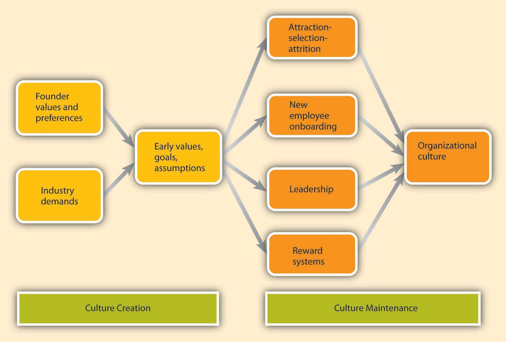
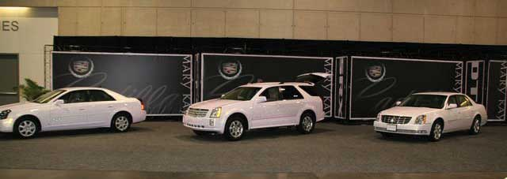

Where do cultures come from? Understanding this question is important in understanding how they can be changed. An organization’s culture is shaped as the organization faces external and internal challenges and learns how to deal with them. When the organization’s way of doing business provides a successful adaptation to environmental challenges and ensures success, those values are retained. These values and ways of doing business are taught to new members as the way to do business.Schein, E. H. (1992). Organizational Culture and Leadership. San Francisco: Jossey-Bass.
The factors that are most important in the creation of an organization’s culture include founders’ values, preferences, and industry demands.
Figure 8.11 Model Describing How Cultures Are Created and Maintained
A company’s culture, particularly during its early years, is inevitably tied to the personality, background, and values of its founder or founders, as well as their vision for the future of the organization. When entrepreneurs establish their own businesses, the way they want to do business determines the organization’s rules, the structure set up in the company, and the people they hire to work with them. For example, some of the existing corporate values of the ice cream company Ben & Jerry’s Homemade Holdings Inc. can easily be traced to the personalities of its founders Ben Cohen and Jerry Greenfield. In 1978, the two high school friends opened up their first ice-cream shop in a renovated gas station in Burlington, Vermont. Their strong social convictions led them to buy only from the local farmers and devote a certain percentage of their profits to charities. The core values they instilled in their business can still be observed in the current company’s devotion to social activism and sustainability, its continuous contributions to charities, use of environmentally friendly materials, and dedication to creating jobs in low-income areas. Even though Unilever acquired the company in 2000, the social activism component remains unchanged and Unilever has expressed its commitment to maintaining it.Kiger, P. J. (April, 2005). Corporate crunch. Workforce Management, 84, 32–38; Rubis, L., Fox, A., Pomeroy, A., Leonard, B., Shea, T. F., Moss, D., et al. (2005). 50 for history. HR Magazine, 50, 13, 10–24; Smalley, S. (2007, December 3). Ben & Jerry’s bitter crunch. Newsweek, 150, 50.
Founder values become part of the corporate culture to the degree to which they help the company be successful. For example, the social activism of Ben and Jerry’s was instilled in the company because the founders strongly believed in these issues. However, these values probably would not be surviving 3 decades later if they had not helped the company in its initial stages. In the case of Ben and Jerry’s, these values helped distinguish their brand from larger corporate brands and attracted a loyal customer base. Thus, by providing a competitive advantage, these values were retained as part of the corporate culture and were taught to new members as the right way to do business.
Figure 8.12
Ben & Jerry’s has locations around the world, including this store in Singapore.
While founders undoubtedly exert a powerful influence over corporate cultures, the industry characteristics also play a role. Companies within the same industry can sometimes have widely differing cultures. At the same time, the industry characteristics and demands act as a force to create similarities among organizational cultures. For example, despite some differences, many companies in the insurance and banking industries are stable and rule-oriented, many companies in the high-tech industry have innovative cultures, and those in nonprofit industry may be people-oriented. If the industry is one with a large number of regulatory requirements—for example, banking, health care, and high-reliability (such as nuclear power plant) industries—then we might expect the presence of a large number of rules and regulations, a bureaucratic company structure, and a stable culture. The industry influence over culture is also important to know because this shows that it may not be possible to imitate the culture of a company in a different industry, even though it may seem admirable to outsiders.
As a company matures, its cultural values are refined and strengthened. The early values of a company’s culture exert influence over its future values. It is possible to think of organizational culture as an organism that protects itself from external forces. Organizational culture determines what types of people are hired by an organization and what types of people are left out. Moreover, once new employees are hired, the company assimilates new employees and teaches them the way things are done in the organization. We call these processes attraction-selection-attrition and onboarding processes. We will also examine the role of leaders and reward systems in shaping and maintaining an organization’s culture.
Organizational culture is maintained through a process known as attraction-selection-attrition (ASA). First, employees are attracted to organizations where they will fit in. Someone who has a competitive nature may feel comfortable in and may prefer to work in a company where interpersonal competition is the norm. Others may prefer to work in a team-oriented workplace. Research shows that employees with different personality traits find different cultures attractive. For example, out of the Big Five personality traits, employees who demonstrate neurotic personalities were less likely to be attracted to innovative cultures, whereas those who had openness to experience were more likely to be attracted to innovative cultures.Judge, T. A., & Cable, D. M. (1997). Applicant personality, organizational culture, and organization attraction. Personnel Psychology, 50, 359–394.
Of course, this process is imperfect, and value similarity is only one reason a candidate might be attracted to a company. There may be other, more powerful attractions such as good benefits. At this point in the process, the second component of the ASA framework prevents them from getting in: selection. Just as candidates are looking for places where they will fit in, companies are also looking for people who will fit into their current corporate culture. Many companies are hiring people for fit with their culture, as opposed to fit with a certain job. For example, Southwest Airlines prides itself for hiring employees based on personality and attitude rather than specific job-related skills, which they learn after they are hired. Companies use different techniques to weed out candidates who do not fit with corporate values. For example, Google relies on multiple interviews with future peers. By introducing the candidate to several future coworkers and learning what these coworkers think of the candidate, it becomes easier to assess the level of fit.
Even after a company selects people for person-organization fit, there may be new employees who do not fit in. Some candidates may be skillful in impressing recruiters and signal high levels of culture fit even though they do not necessarily share the company’s values. In any event, the organization is eventually going to eliminate candidates eventually who do not fit in through attrition. Attrition refers to the natural process where the candidates who do not fit in will leave the company. Research indicates that person-organization misfit is one of the important reasons for employee turnover.Kristof-Brown, A. L., Zimmerman, R. D., & Johnson, E. C. (2005). Consequences of individuals’ fit at work: a meta-analysis of person–job, person–organization, person–group, and person–supervisor fit. Personnel Psychology, 58, 281–342; O’Reilly, C. A., III, Chatman, J. A., & Caldwell, D. F. (1991). People and organizational culture: A profile comparison approach to assessing person-organization fit. Academy of Management Journal, 34, 487–516.
Because of the ASA process, the company attracts, selects, and retains people who share its core values, whereas those people who are different in core values will be excluded from the organization either during the hiring process or later on through naturally occurring turnover. Thus, organizational culture will act as a self-defending organism where intrusive elements are kept out. Supporting the existence of such self-protective mechanisms, research shows that organizations demonstrate a certain level of homogeneity regarding personalities and values of organizational members.Giberson, T. R., Resick, C. J., & Dickson, M. W. (2005). Embedding leader characteristics: An examination of homogeneity of personality and values in organizations. Journal of Applied Psychology, 90, 1002–1010.
Another way in which an organization’s values, norms, and behavioral patterns are transmitted to employees is through onboardingThe process through which new employees learn the attitudes, knowledge, skills, and behaviors required to function effectively within an organization. (also referred to as the organizational socialization process). Onboarding refers to the process through which new employees learn the attitudes, knowledge, skills, and behaviors required to function effectively within an organization. If an organization can successfully socialize new employees into becoming organizational insiders, new employees will feel accepted by their peers and confident regarding their ability to perform; they will also understand and share the assumptions, norms, and values that are part of the organization’s culture. This understanding and confidence in turn translate into more effective new employees who perform better and have higher job satisfaction, stronger organizational commitment, and longer tenure within the company.Bauer, T. N., Bodner, T., Erdogan, B., Truxillo, D. M., & Tucker, J. S. (2007). Newcomer adjustment during organizational socialization: A meta-analytic review of antecedents, outcomes, and methods. Journal of Applied Psychology, 92, 707–721. Organizations engage in different activities to facilitate onboarding, such as implementing orientation programs or matching new employees with mentors.
New employees who are proactive, seek feedback, and build strong relationships tend to be more successful than those who do not. Bauer, T. N., & Green, S. G. (1998). Testing the combined effects of newcomer information seeking and manager behavior on socialization. Journal of Applied Psychology, 83, 72–83; Kammeyer-Mueller, J. D., & Wanberg, C. R. (2003). Unwrapping the organizational entry process: Disentangling multiple antecedents and their pathways to adjustment. Journal of Applied Psychology, 88, 779–794; Wanberg, C. R., & Kammeyer-Mueller, J. D. (2000). Predictors and outcomes of proactivity in the socialization process. Journal of Applied Psychology, 85, 373–385. For example, feedback seeking helps new employees. Especially on a first job, a new employee can make mistakes or gaffes and may find it hard to understand and interpret the ambiguous reactions of coworkers. By actively seeking feedback, new employees may find out sooner rather than later any behaviors that need to be changed and gain a better understanding of whether their behavior fits with the company culture and expectations.
Relationship building or networking (a facet of the organizing function) is another important behavior new employees may demonstrate. Particularly when a company does not have a systematic approach to onboarding, it becomes more important for new employees to facilitate their own onboarding by actively building relationships. According to one estimate, 35% of managers who start a new job fail in the new job and either voluntarily leave or are fired within one and a half years. Of these, over 60% report not being able to form effective relationships with colleagues as the primary reason for this failure.Fisher, A. (2005, March 7). Starting a new job? Don’t blow it. Fortune, 151, 48.
Many organizations, including Microsoft, Kellogg Company, and Bank of America take a more structured and systematic approach to new employee onboarding, while others follow a “sink or swim” approach where new employees struggle to figure out what is expected of them and what the norms are.
A formal orientation programA program used to indoctrinate new employees to the company culture, as well as introducing them to their new jobs and colleagues. indoctrinates new employees to the company culture, as well as introducing them to their new jobs and colleagues. An orientation program has a role in making new employees feel welcome in addition to imparting information that may help them be successful in their new jobs. Many large organizations have formal orientation programs consisting of lectures, videotapes, and written material, while some may follow more informal approaches. According to one estimate, most orientations last anywhere from one to five days, and some companies are currently switching to a computer-based orientation. Ritz Carlton, the company ranked number 1 in Training magazine’s 2007 top 125 list, uses a very systematic approach to employee orientation and views orientation as the key to retention. In the 2-day classroom orientation, employees spend time with management, dine in the hotel’s finest restaurant, and witness the attention to customer service detail firsthand. During these two days, they are introduced to the company’s intensive service standards, team orientation, and its own language. Later, on their 21st day they are tested on the company’s service standards and are certified.Durett, J. (2006, March 1). Technology opens the door to success at Ritz-Carlton. Retrieved November 15, 2008, from http://www.managesmarter.com/msg/search/article_display.jsp?vnu_content_id=1002157749; Elswick, J. (2000, February). Puttin’ on the Ritz: Hotel chain touts training to benefit its recruiting and retention. Employee Benefit News, 14, 9; The Ritz-Carlton Company: How it became a “legend” in service. (2001, January–February). Corporate University Review, 9, 16. Research shows that formal orientation programs are helpful in teaching employees about the goals and history of the company, as well as communicating the power structure. Moreover, these programs may also help with a new employee’s integration to the team. However, these benefits may not be realized to the same extent in computer-based orientations. In fact, compared to those taking part in a regular, face-to-face orientation, those undergoing a computer-based orientation were shown to have lower understanding of their job and the company, indicating that different formats of orientations may not substitute for each other.Klein, H. J., & Weaver, N. A. (2000). The effectiveness of an organizational level orientation training program in the socialization of new employees. Personnel Psychology, 53, 47–66; Moscato, D. (2005, April). Using technology to get employees on board. HR Magazine, 50, 107–109; Wesson, M. J., & Gogus, C. I. (2005). Shaking hands with a computer: An examination of two methods of organizational newcomer orientation. Journal of Applied Psychology, 90, 1018–1026.
One of the most important ways in which organizations can help new employees adjust to a company and a new job is through organizational insiders—namely, supervisors, coworkers, and mentors. Leaders have a key influence over onboarding and the information and support they provide determine how quickly employees learn about the company politics and culture, while coworker influence determines the degree to which employees adjust to their teams. MentorsA trusted person who provides an employee with advice and support regarding career-related matters. can be crucial to helping new employees adjust by teaching them the ropes of their jobs and how the company really operates. A mentor is a trusted person who provides an employee with advice and support regarding career-related matters. Although a mentor can be any employee or manager who has insights that are valuable to the new employee, mentors tend to be relatively more experienced than their protégés. Mentoring can occur naturally between two interested individuals or organizations can facilitate this process by having formal mentoring programs. These programs may successfully bring together mentors and protégés who would not come together otherwise.
Research indicates that the existence of these programs does not guarantee their success, and there are certain program characteristics that may make these programs more effective. For example, when mentors and protégés feel that they had input in the mentor-protégé matching process, they tend to be more satisfied with the arrangement. Moreover, when mentors receive training beforehand, the outcomes of the program tend to be more positive.Allen, T. D., Eby, L. T., & Lentz, E. (2006). Mentorship behaviors and mentorship quality associated with formal mentoring programs: Closing the gap between research and practice. Journal of Applied Psychology, 91, 567–578. Because mentors may help new employees interpret and understand the company’s culture, organizations may benefit from selecting mentors who personify the company’s values. Thus, organizations may need to design these programs carefully to increase their chance of success.
Leaders are instrumental in creating and changing an organization’s culture. There is a direct correspondence between the leader’s style and an organization’s culture. For example, when leaders motivate employees through inspiration, corporate culture tends to be more supportive and people-oriented. When leaders motivate by making rewards contingent on performance, the corporate culture tended to be more performance-oriented and competitive.Sarros, J. C., Gray, J., & Densten, I. L. (2002). Leadership and its impact on organizational culture. International Journal of Business Studies, 10, 1–26. In these and many other ways, what leaders do directly influences the cultures of their organizations. This is a key point for managers to consider as they carry out their leading P-O-L-C function.
Part of the leader’s influence over culture is through role modeling. Many studies have suggested that leader behavior, the consistency between organizational policy and leader actions, and leader role modeling determine the degree to which the organization’s culture emphasizes ethics.Driscoll, K., & McKee, M. (2007). Restorying a culture of ethical and spiritual values: A role for leader storytelling. Journal of Business Ethics, 73, 205–217. The leader’s own behaviors will signal to individuals what is acceptable behavior and what is unacceptable. In an organization in which high-level managers make the effort to involve others in decision making and seek opinions of others, a team-oriented culture is more likely to evolve. By acting as role models, leaders send signals to the organization about the norms and values that are expected to guide the actions of its members.
Leaders also shape culture by their reactions to the actions of others around them. For example, do they praise a job well done or do they praise a favored employee regardless of what was accomplished? How do they react when someone admits to making an honest mistake? What are their priorities? In meetings, what types of questions do they ask? Do they want to know what caused accidents so that they can be prevented, or do they seem more concerned about how much money was lost because of an accident? Do they seem outraged when an employee is disrespectful to a coworker, or does their reaction depend on whether they like the harasser? Through their day-to-day actions, leaders shape and maintain an organization’s culture.
Finally, the company culture is shaped by the type of reward systems used in the organization and the kinds of behaviors and outcomes it chooses to reward and punish. One relevant element of the reward system is whether the organization rewards behaviors or results. Some companies have reward systems that emphasize intangible elements of performance as well as more easily observable metrics. In these companies, supervisors and peers may evaluate an employee’s performance by assessing the person’s behaviors as well as the results. In such companies, we may expect a culture that is relatively people- or team-oriented, and employees act as part of a family.Kerr, J., & Slocum, J. W., Jr. (2005). Managing corporate culture through reward systems. Academy of Management Executive, 19, 130–138. However, in companies in which goal achievement is the sole criterion for reward, there is a focus on measuring only the results without much regard to the process. In these companies, we might observe outcome-oriented and competitive cultures. Whether the organization rewards performance or seniority would also make a difference in culture. When promotions are based on seniority, it would be difficult to establish a culture of outcome orientation. Finally, the types of behaviors that are rewarded or ignored set the tone for the culture. Which behaviors are rewarded, which ones are punished, and which are ignored will determine how a company’s culture evolves. A reward system is one tool managers can wield when undertaking the controlling function.
How do you find out about a company’s culture? We emphasized earlier that culture influences the way members of the organization think, behave, and interact with one another. Thus, one way of finding out about a company’s culture is by observing employees or interviewing them. At the same time, culture manifests itself in some visible aspects of the organization’s environment. In this section, we discuss five ways in which culture shows itself to observers and employees.
Figure 8.13 Visual Elements of Culture

A mission statementA statement of purpose, describing who the company is and what it does. is a statement of purpose, describing who the company is and what it does. It serves an important function for organizations as part of the first facet of the planning P-O-L-C function. But, while many companies have mission statements, they do not always reflect the company’s values and its purpose. An effective mission statement is well known by employees, is transmitted to all employees starting from their first day at work, and influences employee behavior.
Some mission statements reflect who the company wants to be as opposed to who they actually are. If the mission statement does not affect employee behavior on a day-to-day basis, it has little usefulness as a tool for understanding the company’s culture. Enron provided an often-cited example of a disconnect between a company’s mission statement and how the company actually operated. Their missions and values statement started with “As a partner in the communities in which we operate, Enron believes it has a responsibility to conduct itself according to certain basic principles.” Their values statement included such ironic declarations as “We do not tolerate abusive or disrespectful treatment. Ruthlessness, callousness and arrogance don’t belong here.”Kunen, J. S. (2002, January 19). Enron’s vision (and values) thing. The New York Times, 19.
A mission statement that is taken seriously and widely communicated may provide insights into the corporate culture. For example, the Mayo Clinic’s mission statement is “The needs of the patient come first.” This mission statement evolved from the founders who are quoted as saying, “The best interest of the patient is the only interest to be considered.” Mayo Clinics have a corporate culture that puts patients first. For example, no incentives are given to physicians based on the number of patients they see. Because doctors are salaried, they have no interest in retaining a patient for themselves, and they refer the patient to other doctors when needed.Jarnagin, C., & Slocum, J. W., Jr. (2007). Creating corporate cultures through mythopoetic leadership. Organizational Dynamics, 36, 288–302. Wal-Mart may be another example of a company that lives its mission statement and therefore its mission statement may give hints about its culture: “Saving people money so they can live better.”Wal-Mart Stores, Inc. (2008). Investor frequently asked questions. Retrieved November 20, 2008, from http://walmartstores.com/Investors/7614.aspx
Figure 8.14
Tradition is important at Mary Kay Cosmetics. Pink Cadillacs are given to top performers at large annual events.
RitualsRepetitive activities within an organization that have symbolic meaning. refer to repetitive activities within an organization that have symbolic meaning.Anand, N. (2005). Blackwell Encyclopedic Dictionary of Management. Cambridge: Wiley. Usually rituals have their roots in the history of a company’s culture. They create camaraderie and a sense of belonging among employees. They also serve to teach employees corporate values and create identification with the organization. For example, at the cosmetics firm Mary Kay Inc., employees attend ceremonies recognizing their top salespeople with an award of a new car—traditionally a pink Cadillac. These ceremonies are conducted in large auditoriums where participants wear elaborate evening gowns and sing company songs that create emotional excitement. During this ritual, employees feel a connection to the company culture and its values such as self-determination, willpower, and enthusiasm.Jarnagin, C., & Slocum, J. W., Jr. (2007). Creating corporate cultures through mythopoetic leadership. Organizational Dynamics, 36, 288–302. Another example of rituals is the Saturday morning meetings of Wal-Mart. This ritual was first created by the company founder Sam Walton, who used these meetings to discuss which products and practices were doing well and which required adjustment. He was able to use this information to make changes in Wal-Mart’s stores before the start of the week, which gave him a competitive advantage over rival stores who would make their adjustments based on weekly sales figures during the middle of the following week. Today, hundreds of Wal-Mart associates attend the Saturday morning meetings in the Bentonville, Arkansas, headquarters. The meetings, which run from 7:00 a.m. to 9:30 a.m., start and end with the Wal-Mart cheer; the agenda includes a discussion of weekly sales figures and merchandising tactics. As a ritual, the meetings help maintain a small-company atmosphere, ensure employee involvement and accountability, communicate a performance orientation, and demonstrate taking quick action.Schlender, B. (2005, April 18). Wal-Mart’s $288 billion meeting. Fortune, 151, 90–106; Wal around the world. (2001, December 8). Economist, 361, 55–57.
Another way in which an observer may find out about a company’s culture is to examine its rules and policies. Companies create rules to determine acceptable and unacceptable behavior and, thus, the rules that exist in a company will signal the type of values it has. Policies about issues such as decision making, human resources, and employee privacy reveal what the company values and emphasizes. For example, a company that has a policy such as “all pricing decisions of merchandise will be made at corporate headquarters” is likely to have a centralized culture that is hierarchical, as opposed to decentralized and empowering. The presence or absence of policies on sensitive issues such as English-only rules, bullying and unfair treatment of others, workplace surveillance, open-door policies, sexual harassment, workplace romances, and corporate social responsibility all provide pieces of the puzzle that make up a company’s culture. This highlights how interrelated the P-O-L-C functions are in practice. Through rules and policies, the controlling function affects the organization’s culture, a facet of organizing.
Below are scenarios of critical decisions you may need to make as a manager one day. Read each question and select one response from each pair of statements. Then, think about the effect your choice would have on the company’s culture (your organizing function) as well as on your controlling function.
Your company needs to lay off 10 people. Would you
You’re asked to establish a dress code. Would you
You need to monitor employees during work hours. Would you
You’re preparing performance appraisals. Would you
Who will be promoted? Would you promote individuals based on
A company’s building, layout of employee offices, and other workspaces communicate important messages about a company’s culture. For example, visitors walking into the Nike campus in Beaverton, Oregon, can witness firsthand some of the distinguishing characteristics of the company’s culture. The campus is set on 74 acres and boasts an artificial lake, walking trails, soccer fields, and cutting-edge fitness centers. The campus functions as a symbol of Nike’s values such as energy, physical fitness, an emphasis on quality, and a competitive orientation. In addition, at fitness centers on the Nike headquarters, only those using Nike shoes and apparel are allowed in. This sends a strong signal that loyalty is expected. The company’s devotion to athletes and their winning spirit are manifested in campus buildings named after famous athletes, photos of athletes hanging on the walls, and their statues dotting the campus.Capowski, G. S. (1993, June) Designing a corporate identity. Management Review, 82, 37–41; Collins, J., & Porras, J. I. (1996). Building your company’s vision. Harvard Business Review, 74, 65–77; Labich, K., & Carvell, T. (1995, September 18). Nike vs. Reebok. Fortune, 132, 90–114; Mitchell, C. (2002). Selling the brand inside. Harvard Business Review, 80, 99–105.
The layout of the office space also is a strong indicator of a company’s culture. A company that has an open layout where high-level managers interact with employees may have a culture of team orientation and egalitarianism, whereas a company where most high-level managers have their own floor may indicate a higher level of hierarchy. Microsoft employees tend to have offices with walls and a door because the culture emphasizes solitude, concentration, and privacy. In contrast, Intel is famous for its standard cubicles, which reflect its egalitarian culture. The same value can also be observed in its avoidance of private and reserved parking spots.Clark, D. (2007, October 15). Why Silicon Valley is rethinking the cubicle office. Wall Street Journal, 250, B9. The degree to which playfulness, humor, and fun are part of a company’s culture may be indicated in the office environment. For example, Jive Software boasts a colorful, modern, and comfortable office design. Their break room is equipped with a keg of beer, free snacks and sodas, an Xbox 360, and Nintendo Wii. A casual observation of their work environment sends the message that employees who work there see their work as fun.Jive Software. (2008). Careers. Retrieved November 20, 2008, from http://www.jivesoftware.com/company.
Perhaps the most colorful and effective way in which organizations communicate their culture to new employees and organizational members is through the skillful use of stories. A story can highlight a critical event an organization faced and the organization’s response to it, or a heroic effort of a single employee illustrating the company’s values. The stories usually engage employee emotions and generate employee identification with the company or the heroes of the tale. A compelling story may be a key mechanism through which managers motivate employees by giving their behavior direction and by energizing them toward a certain goal.Beslin, R. (2007). Story building: A new tool for engaging employees in setting direction. Ivey Business Journal, 71, 1–8. Moreover, stories shared with new employees communicate the company’s history, its values and priorities, and create a bond between the new employee and the organization. For example, you may already be familiar with the story of how a scientist at 3M invented Post-it notes. Arthur Fry, a 3M scientist, was using slips of paper to mark the pages of hymns in his church choir, but they kept falling off. He remembered a superweak adhesive that had been invented in 3M’s labs, and he coated the markers with this adhesive. Thus, the Post-it notes were born. However, marketing surveys for the interest in such a product were weak and the distributors were not convinced that it had a market. Instead of giving up, Fry distributed samples of the small yellow sticky notes to secretaries throughout his company. Once they tried them, people loved them and asked for more. Word spread and this led to the ultimate success of the product. As you can see, this story does a great job of describing the core values of a 3M employee: Being innovative by finding unexpected uses for objects, persevering, and being proactive in the face of negative feedback.Higgins, J. M., & McAllester, C. (2002) Want innovation? Then use cultural artifacts that support it. Organizational Dynamics, 31, 74–84.
Language is another way to identify an organization’s culture. Companies often have their own acronyms and buzzwords that are clear to them and help set apart organizational insiders from outsiders. In business, this code is known as jargon. Jargon is the language of specialized terms used by a group or profession. Every profession, trade, and organization has its own specialized terms.
Organizational cultures are created by a variety of factors, including founders’ values and preferences, industry demands, and early values, goals, and assumptions. Culture is maintained through attraction-selection-attrition, new employee onboarding, leadership, and organizational reward systems. Signs of a company’s culture include the organization’s mission statement, stories, physical layout, rules and policies, and rituals.


{kind=link}
{kind=link}